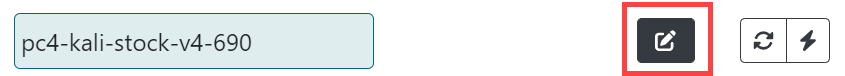

Building a New Workspace
The workspace interface contains six tabs: Settings, Templates, Document, Challenge, Files, and Play. To build a new TopoMojo workspace click Home, then New Workspace.
Settings
The Settings tab holds the metadata for your lab.
Title: The title of your workspace; remember that the title should be unique.
Description: A brief description of your workspace to display when browsing titles. The Description is viewable to everyone, and when used in conjunction with Gameboard, visible there too.
Tags: Internal metadata to add data about the lab; for example, if using for a cyber competition, then your tag may be something like cyber-cup c01. Now, you can search for that challenge (or lab) using that tag.
Authorship: Your name and the names of others who may have assisted you.
Audience: A space-delimited list of administrator-defined groups that have permission to deploy gamespaces from the workspace. Administrators define an audience with any name here. Users can deploy gamespaces from the workspace only if their scope matches one of the provided audiences. Everyone is the global audience that allows all users to deploy gamespaces from the workspace. For more information, see the Admin Dashboard - Users documentation.
Duration: Recommended length of time in minutes that it takes to play through a gamespace launched from your workspace.
Collaboration: To share your workspace with others click Generate invitation. Paste the link into an email and send. TopoMojo shows Collaborators here alongside the author. When a collaborator connects to your workspace, you'll see them connected in the top right corner of the workspace.
Clone: Clones your workspace; TopoMojo appends -CLONE to the title of the new workspace.
Delete: Deletes an existing workspace.
Templates
The template selector allows you to add virtual machine templates to your workspace. The templates here are "starting point" virtual machines that you can customize. There are blank disc templates for installing your own operating system plus other VMs with operating systems pre-installed.
Adding and Editing Templates
To add a template to your workspace:
- On the Templates tab, click Add Templates.
- Search for and add the templates you need for your topology.
- Click the edit icon to expand the template(s) to make changes.

Template Field Definitions
The list below explains the fields in the VM template.
- Name: Edit the name here. Remember that the name should be unique within the workspace.
- Description: The Description should contain the credentials for the virtual machine and the purpose of the virtual machine.
- Networks: The Networks fields allows you to add a space-delimited list of networks where the virtual machines connect. These names should be the same for all systems in your lab that need to connect to the same network.
-
Guest Settings: List key value pairs in the form of
key=valueto pass data into deployed VMs via VMware guestinfo Variables. The Guest Settings field uses VMware Guest Info Variables to inject content into virtual machines. Place key/value pairs here. The key is the name of the guest variable you want to define, and the value is the value, information, setting, of the variable. For example,var1=testis a guest setting named "var1" with a value of "test".Transforms allow you to define dynamic variables that TopoMojo generates based on certain criteria or types. To add the concept of transforms here, select Challenge and see Transforms. The info icon in the Transforms section describes the transform types that are available. See also the "Transforms" topic here.
Use VMware Tools, such as
open-vm-toolsand thevmtoolsdcommand, to access guest info variables from a Gamespace VM. See Open VM Tools and VMware Tools daemon help.
-
Replicas: Set this number to deploy copies of the same VM template. For example: to deploy three copies of a VM template when TopoMojo starts a gamespace, set Replicas to "3". To deploy one copy of the VM template for each team member that TopoMojo starts the gamespace for, set Replicas to "-1".
- Variant: Specify that TopoMojo should deploy the VM template only for a particular variant. For example, if the Variant is "2", TopoMojo deploys the VM template only when it launches variant 2 of the challenge.
- ISO: Use the ISO Selector to attach an ISO image to your virtual machine.
- Console Access: Toggle Hidden to hide a specific VM from being accessible by the person completing the lab. This is useful for systems like a DHCP server that do not require user interaction.
- Linked: Unlinking creates a new a new copy of the template which you can save and customize. Toggle Unlink for any virtual machine that will not use the default disk included with the template.
- Delete Template: Deletes the template.
Refresh and Deploy

Once the template is in the appropriate state:
- Refresh: (arrows) Refresh queries the state of the VM from the hypervisor. This is useful if you run a
shutdowncommand in the VM and the TopoMojo UI icons haven't updated to reflect the powered-off state of the VM yet. - Deploy: (lightning bolt) Deploys that virtual machine into your workspace.
The deployed virtual machine displays the following additional icons from left to right:

- Console: Opens the console for the virtual machine.
- Stop/Start: Power off/on the VM, but leaves the resource deployed on the hypervisor. Clicking stop results in the hypervisor showing a deployed VM in a powered-off state. Clicking start powers on the deployed VM.
- Revert: Reverts the VM to its last saved state. You lose all changes made since the last commit.
- Delete: Deletes a running VM instance. Before you click delete, make sure you have saved any changes to the disk.
Save

The save icon only when you're using an unlinked disk, since you can't save changes to a linked disk. Clicking save removes the last snapshot and creates a new one with all VM changes.